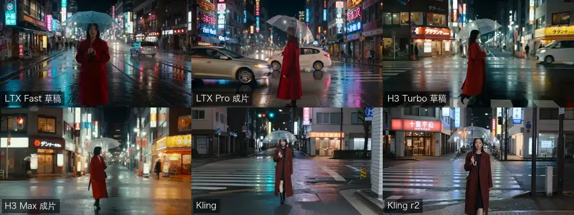
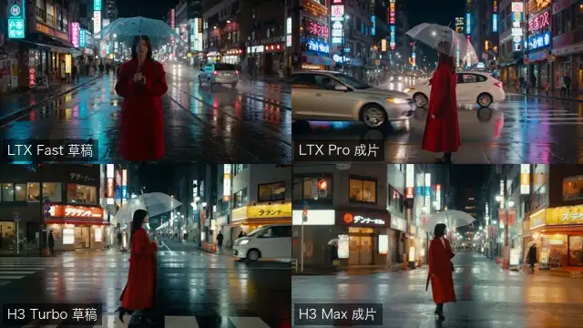
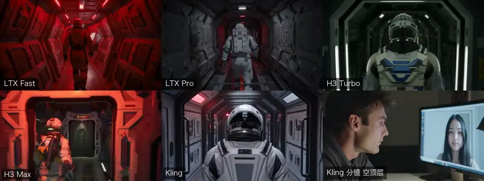
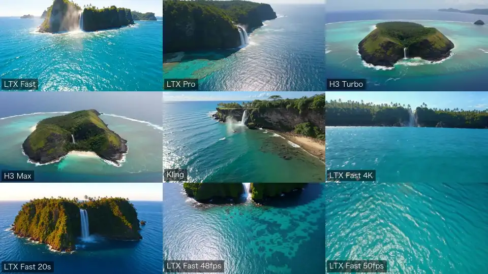
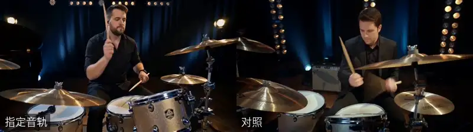
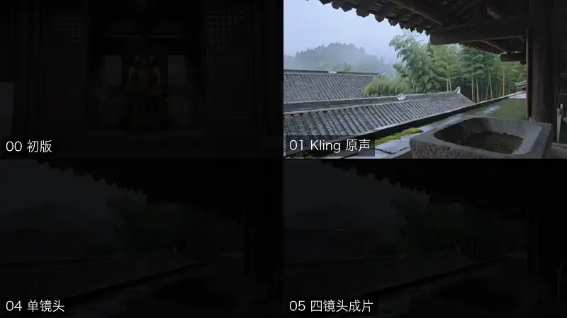
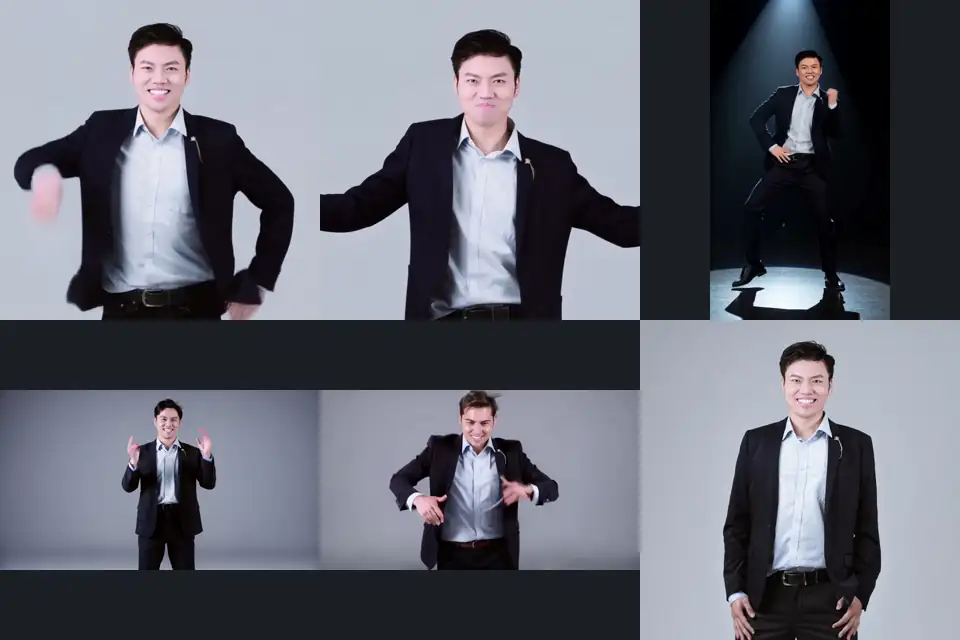

Media Generation 样片集：Foundry 五个视频模型实测
Microsoft Foundry 经 fal 提供的五个视频模型——Kling v3 Pro、LTX 2.5 Fast / Pro、MiniMax H3 Max / Max Turbo——按同一套方案实测：七个测试、93 次请求、90 条成片。每个测试一页，页面里直接播放完整原片，附请求参数、实际规格、耗时、估算费用和逐条验片观察。最后两页是实践：一条 15 秒短片从初版到成片的创作过程，以及用一张真人半身照让五个模型各跳一段舞。

Test 01 · 雨夜人物：五个模型的基线
同一条 Prompt、6 秒 1080p，五个模型各 3 条

Test 07 · 草稿到成片：同族换档能保留多少
LTX Fast→Pro、H3 Turbo→Max，同一 Prompt 成对比较

Test 02 · 宇航员对白：原生语音与 Kling 分镜
五个模型说同一句英文台词；Kling 结构化分镜的两种写法

Test 03 · 海岛航拍：长镜头、4K 与高帧率
五个模型各 3 条，外加 LTX Fast 的 4K / 20 秒 / 48 / 50 fps

Test 04 · 鼓点音频：指定音轨能不能驱动画面
H3 Max 的 target_audio 与对照组，成对比较
Test 05 · 人与狗：双参考图 vs 首帧加文字
两个主体同时保持外观，参考生成与图生视频的差别
Test 06 · 挥手动作迁移：参考视频驱动 3D 角色
真人挥手视频 + 卡通宇航员，参考组与文字动作对照
接口边界：路由、内联大小，以及 Foundry 与 fal 的能力差距
带不带 v1、内联 JPEG 能多大、fal 有而 Foundry 没开放的能力

实践 · 15 秒《金刚经·开经偈》短片
从系统人声的初版，到真人录音配四镜头剪辑

实践 · 一张真人半身照跳 MJ 风格舞
同一张照片、六种接法，各跑到模型允许的最长时长
怎么读这些结果
- 每组 3 条是探索性样本。视频生成有随机性，3 条只能描述“这次看到了什么”，不能当成模型排名；正式比较要同一组合累计 20 条以上再报 P50 / P95 和成功率。
- 评分 A/V/T/M 分别是提示遵循、画质、时间一致性、可见运动，1–5 分，依据是每条四个位置的抽帧，不是逐帧播放审片。音画同步和“能不能直接交付”没有评分。
- 端到端从第一次 POST 算到 MP4 下载并校验完成，含排队与轮询间隔；不是厂商公布的推理时间。
- 估算费用是 Foundry 发布单价乘以实测时长，不是账单。H3 与 Kling 的实际时长都比请求略长，按秒计费时要注意。
- 同步播放按钮会把一组视频同时从头播放，方便并排对比；首次加载视频需要几秒。